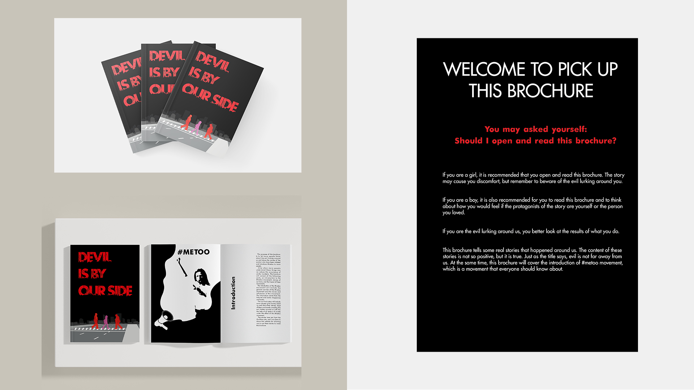

biography
Hello! I am Yuanbi Li and I will soon graduate with a Bachelor of Design majoring in Communication Design. Studying design has had a significant impact on my life. Perhaps influenced by my father's hobby of photography and my mother's hobby of philately, I have been interested in visual communication since I was a child. The University of Waikato has been a good place for me to learn and expand my interest while striving for my dreams.
Before I entered university, I had never had a systematic understanding of design. I just simply equated it with art. During these three years of study, I have gained a lot of theoretical knowledge of design concepts and many design techniques. At the same time, many opportunities helped me develop into who I am today. During this process, I found that I was most interested in print media and branding. At the same time, I also maintain my interest in UX, UI and website design.
project description
As per the NZ Crime and Victim Survey 2018, over 900,000 individuals (23% of adults) have experienced an incident of sexual abuse, with 71% of these being female and one in three girls may be sexually abused before the age of 16. It is estimated that only one in every hundred incidents are reported and only 3% of those make it to court. Many people do not realise that crimes committed by acquaintances account for the highest proportion of these. I hope that by reading this brochure, people will develop an increased awareness and take steps to keep themselves safe. It is hoped that the brochure will help reduce the occurrence of such incidents. At the same time, I hope more people can understand the #metoo movement and the stories of those who survived.
Devil is by our side

For more information contact us
Email: degreeshow@waikato.ac.nz
Faculty phone: 0800 924 528
Faculty information: cs.waikato.ac.nz